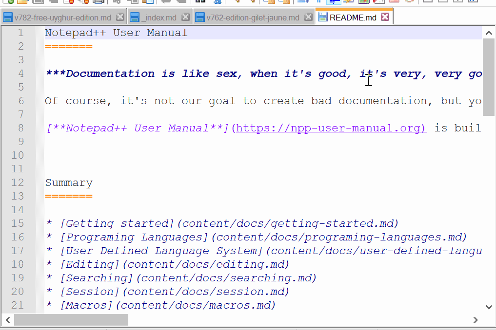

Selection modes & Column Editor
Notepad++ has two modes for selecting text: stream selection and column-mode selection.
Normally when you select text by LeftClick+Drag with the mouse, or Shift+Arrow key commands, you make what is called a stream selection. In this mode, the text that is selected is contiguous, left-to-right, top-to-bottom. There is another mode of selection called column mode that you can enter in order to select text that isn’t contiguous horizontally, but rather vertically. Column mode is also referred to as column-block, rectangular selection, or rectangular block selection.
On the Edit menu is an entry Column Mode which when executed opens a text box window that explains the basics of column mode selection of text:
There are 3 ways to switch to column-select mode:
(Keyboard and Mouse) Hold Alt while left-click dragging
(Keyboard only) Hold Alt+Shift while using arrow keys
(Keyboard or Mouse) Put caret at desired start of column block position, then execute the Begin/End Select in Column Mode command; move caret to desired end of column block position, then execute the Begin/End Select in Column Mode command again.
Truly, other ways to enter column-mode exist, e.g. try Alt+Shift+PageDown, but knowing the intricacies of these – what works and what doesn’t – takes some really specialized knowledge.
As soon as you make a caret movement that doesn’t intentionally keep you in column mode, your selection mode returns to the stream selection mode. Similarly, if in stream mode, and you perform a caret movement that doesn’t keep you selecting text, your stream selection will end and no text will be selected.
When column-selecting with the mouse, once you stop making a column mode selection by letting up on the mouse’s left click button, the only way to then alter the shape of the rectangular selection is with the keyboard (Alt+Shift+Arrows).
Animation of using Alt+LeftClick+Drag or Alt+Shift+Arrows to make a selection in column mode:
In column mode, typing will type the same thing in all the rows of the column. If you copy/cut in column mode, then you copy/cut a rectangle of text, which can be pasted over an identical-sized rectangle elsewhere, or pasted into a separate document or separate application. This is implemented for making working with rectangles of text (instead of whole lines of text) more convenient.
In column mode selection, when text is copied/cut, artificial line-ending characters are introduced into the text. Thus, pasting in column mode can sometimes lead to surprising results, especially when you simply want the text inserted as if it isn’t a column block. Example: You copy a column block that spans 10 lines and then move the caret to column 1 on an empty line in your document and perform the paste. The first line of the data from the paste ends up fine, but for the remaining lines, the paste has pushed existing text on subsequent lines to the right before inserting the new columns. The solution here is to first (before the paste), use the Enter key to insert enough blank lines in the document so that the paste won’t do this.
The Column Editor dialog, accessed via Edit > Column Editor, allows you to insert text or numbers in every row of the active Column Mode selection:
- The Text to Insert will use the same text in every row.
The Number to Insert will insert increasing numbers.
- Initial number sets the starting number.
- Increase by will change the step between numbers. With a value of
0(or if left empty), it will insert the same number every time. - Repeat will repeat the same number n times. Defaults to 1 if left blank.
Leading is a pull-down selector that will allow choosing between no leading characters, leading zeros, or leading spaces.
None Zeros Spaces examples shown with View > Show Symbol > Show Spaces and Tab to make the leading spaces obvious.
(Prior to v8.5.2, the only option was a checkbox for ☐ Leading zeros, so unchecked was equivalent to “None” and checkmarked was equivalent to “Zeros”)
Format chooses between Dec (0-9), Hex (0-9,A-F), Oct (0-7), or Bin (0-1). Note: the numerical boxes above are always in decimal, even if a different format is chosen for display. (Example: to get
F-1F, column-select 17 rows and set the initial number to15– it will not allowF.)
Multi-Editing
Multi-Editing mode (available via mouse usage only) allows you to make multiple carets by using Ctrl+Click for each additional caret. This allows performing the same editing actions (typing, copy/cut/paste/delete, arrowing through the text) in multiple locations, even if they aren’t lined up in a nice column, or even if there are lines between the carets that you don’t want to affect. You may place as many additional carets as you want.
In addition to placing additional carets, you may also make multiple selections. After making an initial selection, do a Ctrl+LeftClick+Drag operation to place a second selection in another location. You may create as many such selections as you’d like. A primary use for this type of selection might be so that you can copy several selections with one command, or to replace multiple selections with the same content if you begin typing or do a paste.
Multi-Editing mode is only available when stream selection(s) are active; it doesn’t work in conjunction with column-block selection. Unlike stream selections, where with Multi-editing you can define two or more selections simultaneously, with column mode there can be only one active selection at a time.
Whether or not you can use Multi-Editing mode is determined by the Settings > Preferences > Editing > ☑ Enable Multi-Editing (Ctrl+Mouse click/selection) checkbox: with it checkmarked, Ctrl+Click will add caret locations; with it not checkmarked, Multi-Editing is disabled.
Animation showing enabling Multi-Editing, and example usage of making multiple carets:
Dual View
To create Dual View, drag and drop any tab that you want it to be in another view (or right click on the tab) then choose “Move to Other View” command from the popup context menu. Once you’ve got 2 views, you can move files between 2 views by drag-and-dropping.

You can find more on moving to other views or instances in the Views > Move / Clone section, and more on manipulating tabs through the tab bar in Other Resources > Tabs.
Clone Document
Drag and drop any tab that you want to clone (or right click on the tab) then choose “Clone to Other View” command from the popup context menu. The cloned document is the same document as its original one, but with the separated views.

You can find more on cloning to other views or instances in the Views > Move / Clone section, and more on manipulating tabs through the tab bar in Other Resources > Tabs.
Character Panel
The Character Panel, accessed through the Edit > Character Panel menu entry, allows the user to interact with the first 256 characters in the active Encoding or Character set.
When opened, the Character Panel will be by default a docked window on the right-hand side of the Notepad++ main window, entitled ASCII Codes Insertion Panel. (This is a bit of a misnomer since ASCII is defined as values 0 - 127 and the panel shows values in the range 0 - 255.)
This panel contains a grid-like control that has five columns: Value, Hex, Character, HTML Name, HTML Decimal and HTML Hexadecimal. The HTML columns show the various HTML entity formats for each character: HTML Name is the named entity, like ". HTML Decimal (or HTML Code in older versions) is the decimal entity, like ". And HTML Hexadecimal (new to v8.5.2) is the hexadecimal entity, like ". (All three of those examples refer to the ASCII double quote " character.)
If input focus is moved to a line in the Character Panel and Enter is pressed, the character from the Character column will be inserted at the current position in the document being edited. If the mouse is used there is more flexibility: an item from the grid that is double-clicked will be inserted. For example, when double-clicking " from the HTML Name column on the line of value 34, " (as literal text) will be inserted at the current position in the active document – so this can be used to insert the character number in decimal or hexadecimal, the character itself, or the HTML entity (named or decimal or hexadecimal) into the document being edited.
When Notepad++ is told to interpret a file as ANSI or any of the Character Sets (described in the Encoding-menu docs), the Character Panel shows information about the 256 8-bit character numbers (that is, the Value) for the character set selected. Note that for all character sets, the 0-127 character values always represent the same character (the ASCII character); character values from 128-255 are character-set specific as to which character each value represents. The panel offers an easy way to see value and character equivalence, and insert characters that don’t exist on your keyboard.
When Notepad++ is told to interpret a file as Unicode (the entries starting with UTF-8 or UTF-16 in the Encoding menu), the Character Panel will show the same characters for values 128-255 as the default codepage character set on the user’s system (viewable as Current ANSI codepage in the ? > Debug Info menu entry). In this case, for values 128-255, the Value column is meaningless – only the Character shown is important. If this panel is used to insert the character into the active document, the correct Unicode character bytes will be used instead of the value as in the simpler ANSI case. For values from 0-127, the character/value pair is meaningful, because for this range the ANSI set of characters – the true ASCII set – line up with the same characters and values in the Unicode set.
Change History
Notepad++ has a column in the margin section which indicates which lines have been changed since the file was last loaded, controlled by a checkbox in Settings > Preferences > Margins/Border/Edge with the background color set by the Settings > Style Configurator > Global Styles > Change History margin (new to v8.4.6)
- When the file is first loaded (or a new file is created), no lines have a color in that margin column.
- If a line is changed (added or edited) since the most recent load or save, it will be orange. (This is
Modified but unsavedin the image.) - After the changes to the file are saved, any lines that have been changed since the file was loaded will be green. (This is
Modified but savedin the image.)- Note: If you tell Notepad++ to reload the file from disk, all lines will be green.
- Multiple saves will leave those lines green, even if they weren’t changed since the previous save.
- The only way to get back to having no color in the margin is to close the file and reload it (easy enough to do with File > Close followed by File > Recent Files > Restore Recent Closed Files, or with default shortcuts, use
Ctrl+WthenCtrl+Shift+T).
- If the file is saved, if you use Undo to go back to the previous modified state, it will be a pale green (some call it “olive” or “yellow-green”). (This is
Revert to modifiedin the image.) - If the file is saved, if you use Undo to go back to the original state of that line (the text it had when the file was originally loaded), it will be a pale blue (some call it “cyan”). (This is
Revert to originalin the image.)
Edit Menu
The top of the Edit menu features typical editing commands which any Windows user should be familiar with:
- Undo - reverts the text to its content before the previous operation; can be used one or more times consecutively to step back through a document’s textual history
- Redo - if Undo was executed previously, this will reinstate the change(s) previously undone; may be executed multiple times
- Cut - will remove any selected text from the document and place it on the Windows clipboard
- Copy - will put a copy of any selected text on the Windows clipboard; document content is unaltered
- Paste - if the Windows clipboard contains text, this will insert a copy of that text at the point of the caret; if text is selected when this command is executed, the selected text will be replaced by the text from the clipboard; if the clipboard does not contain text, nothing will happen
- Delete - will remove any selected text from the document
- Select All - selects all text in the document into a stream selection
Below the common editing commands are two that (each) allow text to be selected in two distinct steps:
- Begin/End Select
- Begin/End Select in Column Mode
Normally text selection is a dedicated process – once a selection is started, the only thing you can do is to complete it, before moving on to other actions. But sometimes it is useful to do other things, in particular document navigation actions, between defining the starting point of a selection and actually bringing the selection into existence.
The Begin/End Select commands are useful when making huge selections of text; rather than holding Shift while using arrow keys or the mouse to select text, and be at the mercy of the system scroll speed as you watch the viewport scroll interminably to locate the far-away ending point for the selection you started, you can use the Begin/End Select feature. Execute Begin/End Select once to set a starting point of a future selection, then use a caret movement command(s) (example: Ctrl+End to move quickly to the end of a document), and finally run Begin/End Select a second time to create a text selection between the two far-away document positions.
After you use Begin/End Select the first time to set the starting point, the menu item for the command will appear “checkmarked” to let you know that you have started the process, and need to execute the command a second time to define the selection end point and show the text as selected.
Begin/End Select in Column Mode works very similarly to the normal version of the command, with the exception being that when the two-stage command is completed, a column mode selection will be made rather than a stream selection. If you execute the first part of one of the commands, and then change your mind about the type of selection needed, you must complete the in-progress command before you will be allowed to begin the one of the opposite type. (New to v8.5.)
Below the Begin/End Select entries, there are a number of sub-menus to the Edit menu, which group together various categories of editing-related commands, and a few other editing commands in the main Edit menu.
- Insert > ⇒ submenu with actions that insert the date and time (new to v8.1.4)
- Date Time (short) ⇒ like
12:46 PM 8/21/2021(new to v8.1.4) - Date Time (long) ⇒ like
12:46 PM Saturday, August 21, 2021) (new to v8.1.4) - Date Time (custom) ⇒ can insert a date with a customized format, as defined in the Settings > Preferences > Multi-Instance & Date dialog
- Date Time (short) ⇒ like
- Copy to Clipboard > ⇒ submenu with actions that copy current filename, path, or directory name to the clipboard
- Indent > ⇒ submenu with actions that increase or decrease the current line’s indentation, based on the syntax language’s tab/indent settings
- Increase Line Indent ⇒ Inserts a tab or equivalent number of spaces at the beginning of the line (any whitespace already at the beginning of the line will still be there, coming after the new tab or spaces that was inserted)
- Decrease Line Indent ⇒ Removes a tab or equivalent number of spaces at the beginning of the line (if there aren’t enough leading space characters to remove an entire tabwidth, all the leading space characters will be removed)
- Convert Case to > ⇒ submenu with actions that change the case of the selected text
- Uppercase ⇒ convert to all uppercase:
StArT mIxEd⇒START MIXED - lowercase ⇒ convert to all lowercase:
StArT mIxEd⇒start mixed - Proper Case ⇒ first character of every word is made uppercase, all others made lowercase:
isCharAlpha NMumericW⇒Ischaralpha Nmumericw - Proper Case (blend) ⇒ first character of every word is made uppercase, all others left alone:
isCharAlpha NMumericW⇒IsCharAlpha NMumericW - Sentence case ⇒ first character of each sentence is made uppercase, all others made lowercase:
tHis Is A Sentence. iS tHis Second?⇒This is a sentence. Is this second? - Sentence case (blend) ⇒ first character of each sentence is made uppercase, all others left alone:
tHis Is A Sentence. iS tHis Second?⇒THis Is A Sentence. IS tHis Second? - iNVERT cASE ⇒ any that were uppercase are changed to lowercase, and any that were lowercase are changed to uppercase:
StArT mIxEd⇒sTaRt MiXeD - ranDOm CasE ⇒ each character gets a random case:
StArT mIxEd⇒StaRt mIxeD
- Uppercase ⇒ convert to all uppercase:
- Line Operations > ⇒ submenu with actions that typically work on lines (also known as “rows”) of your document
- There is a method for duplicating data:
- Duplicate Current Line: Duplicates the current line. (Prior to v8.6, if a selection was active it would duplicate just that selection, but starting in v8.6, selection state is ignored for this menu command; if you want the old behavior, the
Ctrl+Dshortcut is, by default, still assigned to the selection-aware duplication, underSCI_SELECTIONDUPLICATEin the Shortcut Mapper.)
- Duplicate Current Line: Duplicates the current line. (Prior to v8.6, if a selection was active it would duplicate just that selection, but starting in v8.6, selection state is ignored for this menu command; if you want the old behavior, the
- There are two versions of the Remove Duplicates functionality:
- Remove Duplicate Lines: leaves only the first instance of any full lines that have more than one copy anywhere in the active file; acts upon the line set spanned by the current selection, or the entire file if no active selection
- Remove Consecutive Duplicate Lines: will only remove duplicates that are on the lines immediately following the first instance (still keeping the first instance); acts upon the line set spanned by the current selection, or the entire file if no active selection
- NOTE: Duplicates removal is performed with the assumption that all line-endings in the file are uniform and match the current selection for the file being edited – the quickest way to check that selection is to glance at the status bar, where the current line-ending type is shown either as
Windows (CR LF),Unix (LF)orMacintosh (CR). It might be desirable to check the line-ending types in your file before executing a sorting operation, and use the Edit > EOL Conversion > choices or right-click on the Status Bar’s EOL indicator to fix the line endings if necessary.
- There are methods for splitting lines and joining lines together:
- Split Lines: will insert a line-ending into a long line(s): if there is one or more Vertical Edge value specified, it will split at the right-most Vertical Edge; otherwise, it will split at the current size of the editor window. It operates on the lines spanned by the current stream selection or the single line of the caret if no stream selection is currently active.
- Join Lines: will combine the lines touched by the active stream selection by replacing line-endings with a single space character. It requires an active stream selection that spans two or more lines.
- There are commands for removing lines
- Remove empty lines: will remove all lines containing no characters from the entire document
- Remove empty lines (Containing Blank characters): will remove all lines containing no characters from the entire document; if a line contains only space or tab characters that line will be removed as well
- There are commands for changing the order of existing lines:
- Move Up Current Line: will swap the current line with the line above it, effectively moving the line of the caret up one row in the document; if a selection spanning lines is active upon invocation, it will move those lines touched by the selection up as a group
- Move Down Current Line: will swap the current line with the line below it, effectively moving the line of the caret down one row in the document; if a selection spanning lines is active upon invocation, it will move those lines touched by the selection down as a group
- Reverse Line Order: will take the selected lines (or all of the lines of the current document if no active selection) and will order them reversely (i.e. flipped) from their existing order (added in v8.0.0)
- Randomize Line Order: will take the selected lines (or all of the lines of the current document if no active selection) and place them in an unpredictable order
- There are a variety of sorting algorithms:
- Ascending means smallest to largest (A-Z)
- Descending means largest to smallest (Z-A)
- Lexicographically (or Lex.) means based on character codepoint, comparing one character at a time:
- All uppercase letters will sort before any lowercase letter, so uppercase
Zwill sort before lowercasea - The sequence
10will sort before2, because it sorts character-by-character of each collection of characters, and the character1comes before the character2
- All uppercase letters will sort before any lowercase letter, so uppercase
- Ignoring case means that lowercase
awill sort the same as uppercaseA, and both will come before eitherZorz - As Integers means that
10will sort as being bigger than2 - As Decimals (Comma) means it will recognize
10,234and9,876as decimal numbers and sort them numerically - As Decimals (Dot) means it will recognize
10.234and9.876as decimal numbers and sort them numerically - NOTE: Sorting is performed with the assumption that all line-endings in the file are uniform and match the current selection for the file being edited – the quickest way to check that selection is to glance at the status bar, where the current line-ending type is shown either as
Windows (CR LF),Unix (LF)orMacintosh (CR). It might be desirable to check the line-ending types in your file before executing a sorting operation, and use the Edit > EOL Conversion > choices or right-click on the Status Bar’s EOL indicator to fix the line endings if necessary. - NOTE: If a Column Mode selection is active, the sort will re-order all the lines included in the selection, but the sort key (the text that decides the sort order) will be limited to what is inside the column selection. This column-selection-based sort will be a “stable sort”: if the keys are identical on two lines, then the order of those two lines will not change, even if text outside of the selected key columns is different.
- There is a method for duplicating data:
- Comment/Uncomment > ⇒ submenu with actions that add or remove comment syntax, based on the file’s Language selection. This makes use of the
commentLine,commentStart, andcommentEndattributes of the active Language as defined in langs.xml to define the characters to use for making or clearing line comments (commentLine) and block comments (commentStartandcommentEnd). - Auto-Completion > ⇒ submenu with actions that manually trigger auto-completion of function name, word, function parameter, and pathname. While the automatic completion is affected by Preferences > Auto-Completion settings for setting minimum number of characters, and enabling which of the completions happen automatically, when you manually trigger one of the auto-completion actions through this menu or keyboard shortcut equivalents, completion will happen regardless of those settings (so you can manually trigger when there’s fewer characters than the auto-trigger threshold, or you can manually trigger function completion when only word completion is active).
- EOL Conversion > ⇒ submenu with actions that convert line endings between Windows (
CR LF), Unix (LF), and old Macintosh (CR) values; these operations affect all of the lines of the current file- If your file has mixed line endings (some
CR LFand someLF, for example), you can use this menu to fix it: if the desired line-ending is not greyed out, you can just select it, and any mixed line-endings will be converted to the chosen line ending; if the desired line-ending is greyed out, select one of the other line-endings, then switch back to the desired line-ending selection, and any mixed line-endings will be converted to the final line-ending choice.
- If your file has mixed line endings (some
Blank Operations > ⇒ submenu with actions that trim or convert spaces and tab characters on ALL lines of the current file.
- Trim Trailing Space: removes any space or tab characters occurring at the end of a line, after any non-whitespace characters
- Trim Leading Space: removes any space or tab characters occurring at the beginning of a line, before any non-whitespace characters
- Trim Leading and Trailing Spaces: combines the functionalities of Trim Trailing Space and Trim Leading Space into one command
- EOL to Space: replaces line-ending characters with a single space character (similar to Join Lines functionality, but acts upon the entire file rather than the active selection); note: “EOL” means “End Of Line” – in other words, line-ending characters
Remove Unnecessary Blank and EOL: performs a combined Trim Leading and Trailing Spaces and EOL to Space operation
TAB to Space: replaces any tab characters with their equivalent number of spaces
Space to TAB (All): consolidates space characters into an equivalent number of tab characters, wherever the spaces occur
Space to TAB (Leading): consolidates space characters into an equivalent number of tab characters, but only where they occur before the first non-whitespace character on a line
NOTE about TAB-related commands: the “equivalent number” of spaces (or tab characters) is based on the Settings > Preferences > Language > Tab Settings > Tab Size for the active language of the current file, and will be enough spaces to take you to the next “tab stop”.
If the current language has a tab setting of 4 spaces per tab, then the tab stops are at 1, 5, 9, 13, and so on.
If you have a tab at column 1, 2, 3, or 4, it will be wide enough so that the next character will be at column 5; and if you convert tabs to spaces, it will replace it with 4, 3, 2, or 1 space (respectively), so that the next character will still be at column 5.
Similarly, tabs at columns 5, 6, 7, or 8 will be displayed as wide as (or converted to spaces as) 4, 3, 2, or 1 spaces (respectively), so that the next character will be at column 9.
These examples are shown in the screenshot below, where View > Show Symbol > Whitespace and Tab shows the tabs as an orange arrow (
→) and the spaces as an orange middot (·); the left shows it with tab characters; the right shows it with those tabs converted to spaces:
If you want a specific number of space characters to replace each tab character, instead of the above-described fill-to-tabstop behavior, you should use a replacement operation in Extended or Regular Expression search mode to replace
\twith the number of space characters you desire.
NOTE: All the Blank Operations commands will default to doing a global change through the whole document. Starting in Notepad++ v8.4.9, if there is an active selection, the Blank Operation change will only apply to the selected text.
Paste Special > ⇒ submenu with actions that pastes HTML or RTF, and special versions of copy/cut/paste which handle NULL and other binary characters
- Note: The HTML and RTF actions paste the HTML and RTF source code from the HTML or RTF entries in the Windows Clipboard; it does not apply HTML or RTF formatting to what appears to be plain text in the Notepad++ editor window.
On Selection > ⇒ submenu with actions that use the currently-selected text as a filename or folder to open, or as a term for an internet search. (Custom commands using the current selection can be added to the Run menu, using the
<UserDefinedCommands>section ofshortcuts.xml.)Multi-Select All > ⇒ submenu with actions that work with the current selection or word under the caret
- Ignore Case & Whole Word ⇒ If nothing is selected, it will determine the current word under the caret, and do a Multi-Select which finds all matches which match that string regardless of case, and regardless of whether the other matches are a whole word or not. If a word or string is selected, it will Multi-Select all the strings which match the current selection.
- Match Case Only ⇒ If nothing is selected, it will determine the current word under the caret, and do a Multi-Select which finds all matches of that word, as long as the case exactly matches. If a word or substring is selected, it will Multi-Select all the strings which match that selection, paying attention to case.
- Whole Word Only ⇒ If nothing is selected, it will determine the current word under the caret, and do a Multi-Select which finds all whole-word matches, regardless of case. If a word is selected, it will Multi-Select all the whole-words which match that selection, ignoring case.
- Match Case & Whole Word ⇒ If nothing is selected, it will determine the current word under the caret, and do a Multi-Select which finds all whole-word matches which match that string, including case. If a word is selected, it will do a Multi-Select which finds all whole-word matches which match that string, including case.
Multi-Select Next > ⇒ submenu with actions that add one more instance to the current multi-select
- Each submenu entry will be analogous to the Multi-Select All described above, but will only add a single match to the Multi-Selection (the next to occur after the current selection), rather than all matches.
Undo the Latest Added Multi-Select ⇒ If you have a Multi-Selection active, this command will take out the most-recently added substring. (For example, if you had the text
the quick brown fox jumped over the lazy dogand Multi-Selectedquickthendog, then ran this command, your selection would only includequick.)Skip Current & Go to Next Multi-Select ⇒ If you have text selected, this command will unselect the current string, and Multi-Select the first instance after this one that matches what had been selected.
Column Mode… ⇒ dialog explaining Column Mode
Column Editor ⇒ runs the Column Editor dialog, described above
Character Panel ⇒ toggles the Character Panel, described above
Clipboard History ⇒ allows you to re-access recent copy/paste values (double-click a row to paste that value)
Set Read-Only ⇒ toggles Notepad++’s read-only flag on the active file buffer.
- If you click this menu entry once, it will add a checkmark
✔to the menu entry, to show that it’s currently read-only for Notepad++. If you click this menu entry when there is already a checkmark✔, the checkmark will be removed and Notepad++ will no longer consider this file read-only. - The state of this Notepad++ read-only flag is saved in the session file, so it will be remembered the next time the session is used.
- Note: this toggle does not affect the Windows Operating System’s read-only attribute on the file; if Windows has marked this file as read-only, this menu entry will be greyed out and you cannot toggle it by clicking on it. See the Clear Read-only Flag (below) for more on the OS flag.
- If you click this menu entry once, it will add a checkmark
Clear Read-Only Flag ⇒ clears the Windows Operating System (OS) read-only attribute on a file.
- Once the OS read-only flag has been cleared, this menu option will be greyed out and clicking on it will do nothing.
- You cannot set the OS read-only flag using this menu in Notepad++; it has to be done through the OS (though Notepad++ scripting plugins are able to ask the OS to set the OS read-only flag on the file, like in this example in the Community Forum).
- If you use the OS to set the flag on a file that is open in Notepad++, and Settings > Preferences > MISC > File Status Auto-Detection has been checked, then Notepad++ will notice that it is now a read-only file, and not allow you to edit the file.
- If you use the OS to set the flag on a file that is open in Notepad++, but Settings > Preferences > MISC > File Status Auto-Detection has been unchecked, then Notepad++ will not notice that it was changed to read-only by the OS, and will blindly allow you to continue making changes; however, when you try to save and it sees that the file is read-only according to the OS, Notepad++ will notify you that you cannot save, and ask if you’d like to launch Notepad++ in Administrator mode to try to make the changes (if you do, the changes you made may be lost).
- The current file’s tab will have the “locked” icon (either the greyed-out disk icon by default, or a padlock icon if Dark Mode is active or if Settings > Preferences > General > ☑ Alternate icons has been checked on) whether the Windows OS read-only attribute is set, or the Notepad++ read-only flag has been set, or both. The “locked” icon will change to a normal icon once neither the Windows OS read-only attribute nor the Notepad++ read-only flag are set (or equivalently, once both flags are cleared).
Other Editing Commands and Shortcuts
There are also around a hundred editor commands that are accessible from keyboard shortcuts (though not all have a keyboard shortcut assigned by default). Many of those commands are not in the Edit menu (or any other Notepad++ menu). These commands are listed in the Shortcut Mapper’s Scintilla commands tab, and you can use the Shortcut Mapper to edit the assignments (add shortcuts or remove shortcuts) for these commands, whether they currently have a shortcut or not.
They have somewhat cryptic names, but if you look at the portion of the name to the right of the SCI_ prefix, it does give you a hint. For example, SCI_CUT shows the shortcuts for the traditional Cut command, and SCI_LINECUT will cut the whole current line, rather than just the selection. The ones that have LINE in the name work on complete lines; if it has CHAR in the name, it works on individual characters; if it has WORD in the name, it works on whole words; and if it has WORDPART in the name, it works on partial words (also called “subwords”, like MyCoolFunction has the three subwords My, Cool, and Function); if it has PARA in the name, it works on paragraphs (a paragraph ends with two consecutive newlines – so a blank line between paragraphs); HOME, END, PAGEUP, and PAGEDOWN correspond to the motions often associated with those keys on your keyboard. If it has CUT, COPY, PASTE, and SELECT in the name, it indicates a variant of the normal editor actions of cutting, copying, pasting, and selecting text; if it has DELETE or DEL in the name, it will delete what is indicated in the rest of the name; if it has EXTEND in the name, it “extends” the selection (adds to the selection; these are usually the Shift+-modified commands for growing the selection). That should be enough to help you understand the basics of what each of those commands do.
The Scintilla project, which Notepad++ uses to implement these traditional editor commands, has documentation for those commands: you can look at the SCI_xxxx in the shortcut mapper, then search for that text on their ScintillaDoc page to find out more about that command.
But with so many commands, and the fact that no documentation set is likely to ever explain everything in the way that makes the most sense to you (what makes sense to one user might be really confusing to another), it might be fruitful to play with some of those commands to see for yourself what they do. (Notepad++ doesn’t let you edit text while the Shortcut Mapper is open: one possible method of doing this experimentation is to have two instances of Notepad++ running, and have the Shortcut Mapper open to the Scintilla commands in one instance, and play with using them in the editor in the other Notepad++ instance.)
Context Awareness
Certain keyboard-shortcuts for editing commands are “context aware”, meaning that they behave differently whether there is an active selection or not. For example,
Tabwill insert a tab character or spaces (depending on per-language settings) when typing normally, but if you have a selection, it will indent the text by one tab-stop.Shift+Deletewill cut the current selection, or if there is no selection, it will delete the current line (assuming you have not changed the shortcutShift+DELfromSCI_CUTto anything else; if you do, this functionality will not be accessible). (Yes, it cuts to the clipboard if there’s a selection, but deletes the line without affecting the clipboard if there is a selection.) (The no-selection variant is new to v8.6.)Ctrl+Cwill copy the current selection, or if there is no selection, it will copy the current line (assuming you have not changed the shortcutCtrl+CfromSCI_COPYto anything else; if you do, this functionality will not be accessible). (The no-selection variant is new to v8.6.)Ctrl+Xwill cut the current selection, or if there is no selection, it will cut the current line (assuming you have not changed the shortcutCtrl+XfromSCI_CUTto anything else; if you do, this functionality will not be accessible). (The no-selection variant is new to v8.6.)
Again, this manual will not enumerate all the context-aware commands. The ones listed above have been deemed especially useful, or are mentioned because they were added to give Notepad++ behavior that is similar to other popular text editors and coding environments.
Printing
The documentation on printing the active document has been moved to Working with Files > Printing.